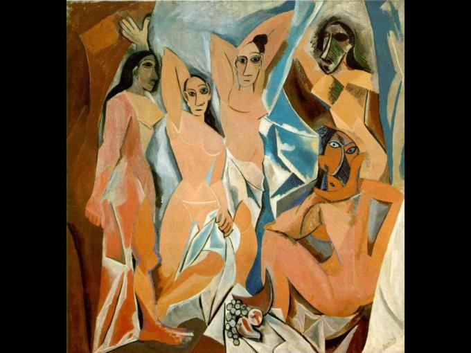
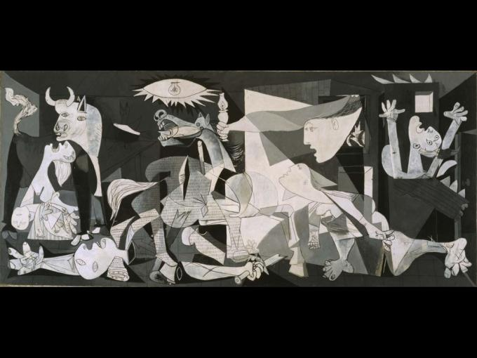
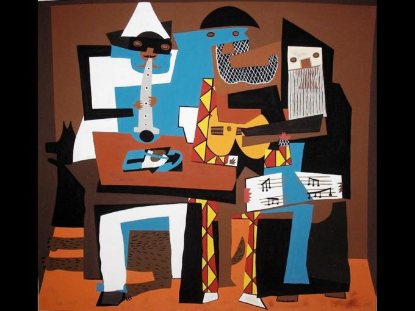
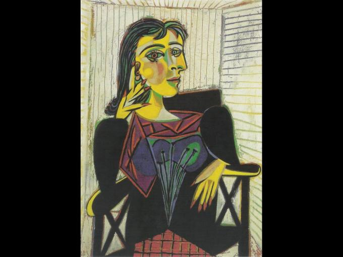
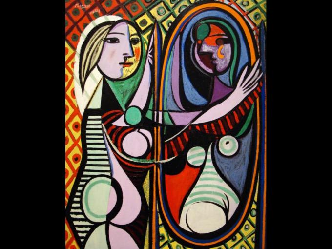

Pablo Picasso

Biografia Pablo Picasso
(Pablo Ruiz Picasso; Málaga, 1881 - Moulins, Francia, 1973) Pintor español. La trascendencia de
Picasso no se agota en la fundación del cubismo, revolucionaria tendencia que rompió definitivamente
con la representación tradicional al liquidar la perspectiva y el punto de vista único. A lo largo de
su dilatada trayectoria, Pablo Picasso exploró incesantemente nuevos caminos e influyó en todas la
facetas del arte del siglo XX, encarnando como ningún otro la inquietud y receptividad del artista
contemporáneo. Su total entrega a la labor creadora y su personalidad vitalista, por otra parte,
nunca lo alejarían de los problemas de su tiempo; una de sus obras maestras, el Guernica (1937),
es la mejor ilustración de su condición de artista comprometido.
Hijo del también artista José Ruiz Blasco, en 1895 se trasladó con su familia a Barcelona, donde
el joven pintor se rodeó de un grupo de artistas y literatos, entre los que cabe citar a los pintores
Ramón Casas y Santiago Rusiñol, con quienes acostumbraba reunirse en el bar Els Quatre Gats. Entre
1901 y 1904, Pablo Picasso alternó su residencia entre Madrid, Barcelona y París, mientras su pintura
entraba en la etapa denominada período azul, fuertemente influida por el simbolismo. En la primavera
de 1904, Picasso decidió trasladarse definitivamente a París y establecerse en un estudio en las
riberas del Sena.
En la capital francesa trabó amistad, entre otros, con los poetas Guillaume Apollinaire y Max Jacob
y con el dramaturgo André Salmon; entre tanto, su pintura experimentó una nueva evolución,
caracterizada por una paleta cromática tendente a los colores tierra y rosa (período rosa).
Al poco de llegar a París entró en contacto con personalidades periféricas del mundillo artístico
y bohemio, como los hermanos estadounidenses Leo y Gertrude Stein, o el que sería ya para siempre
su marchante, Daniel-Henry Kahnweiler.
A finales de 1906, Pablo Picasso empezó a trabajar en una composición de gran formato que iba a
cambiar el curso del arte del siglo XX: Les demoiselles d'Avignon. En esta obra cumbre confluyeron
numerosas influencias, entre las que cabe citar como principales el arte africano e ibérico y
elementos tomados de El Greco y Cézanne. Bajo la constante influencia de este último, y en compañía
de otro joven pintor, Georges Braque, Pablo Picasso se adentró en una revisión de buena parte de la
herencia plástica vigente desde el Renacimiento, especialmente en el ámbito de la representación
pictórica del volumen. Las tramas geométricas eliminan la profundidad espacial e introducen el
tiempo como dimensión al simultanear diversos puntos de vista: era el inicio del cubismo.
....pinturas de Pablo Picasso....
|

El cuadro de 'Las señoritas de Avignon' fue pintado por Picasso en 1907. Actualmente se encuentra en
el Museo de Arte Moderno de Nueva York (EE. UU.). El artista malagueño, máximo exponente del
cubismo español rompe con los cánones del realismo y reduce la obra a planos angulares, dejando de
lado la perspectiva espacial o el fondo. El cuadro se considera el inicio del arte moderno.
|
|---|

Picasso nunca bautizaba sus creaciones nada más pintarlas, sino más bien mucho tiempo
después (varios años). En este caso, sin embargo, el cuadro, que fue pintado en apenas
dos meses del año 1937, nos encontramos una alusión al bombardeo de Guernica durante
la Guerra Civil Española. En este cuadro meramente simbólico, Picasso empleó únicamente
los colores blanco y negro, y un gran abanico de grises. El Guernica, ese grito
pictórico contra la represión y la violencia, se encuentra en el Museo Nacional Centro
de Arte Reina Sofía en Madrid (España).
|
|---|

'Los tres músicos' o 'Músicos con máscaras' fue pintado por Picasso en Fontainebleau, Francia,
en 1921 y pone punto y final al período del Cubismo Sintético para comenzar con el cubismo analítico,
esto es, una pintura mucho más compleja y aún más abstracta. Hizo dos versiones de este cuadro y
ambas se consideran dos obras maestras de la historia del arte. Se encuentran en el Museo de Arte
Moderno de Nueva York (EE.UU.).
|
|---|

Pintado en 1937, este Retrato de Dora Maar o Henriette Theodora Markovitch, representa a la musa de
Picasso. Esta artista plástica, aparte de ser conocida por su relación con el artista malagueño,
fue muy prolífica. Sin duda con una personalidad muy compleja, callada, orgullosa, inteligente y
curiosa, Dora Maar nos dejó una conocida serie de fotografías del Guernica. El 'Retrato de Dora Maar'
se encuentra en el Museo Nacional Centro de Arte Reina Sofía en Madrid (España).
|
|---|

Pintado en 1932, este cuadro retrata a una mujer de una forma muy abstracta, utilizando rombos,
círculos y triángulos para crearlo. La modelo del cuadro es Marie-Thérèse Walter (amante de Picasso).
La obra de la 'Mujer ante el espejo' se encuentra en el Museo de
Arte Moderno -MoMA- de Nueva York (EE.UU.).
|
|---|
Volver al inicio